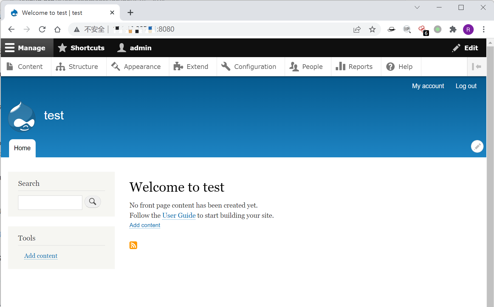
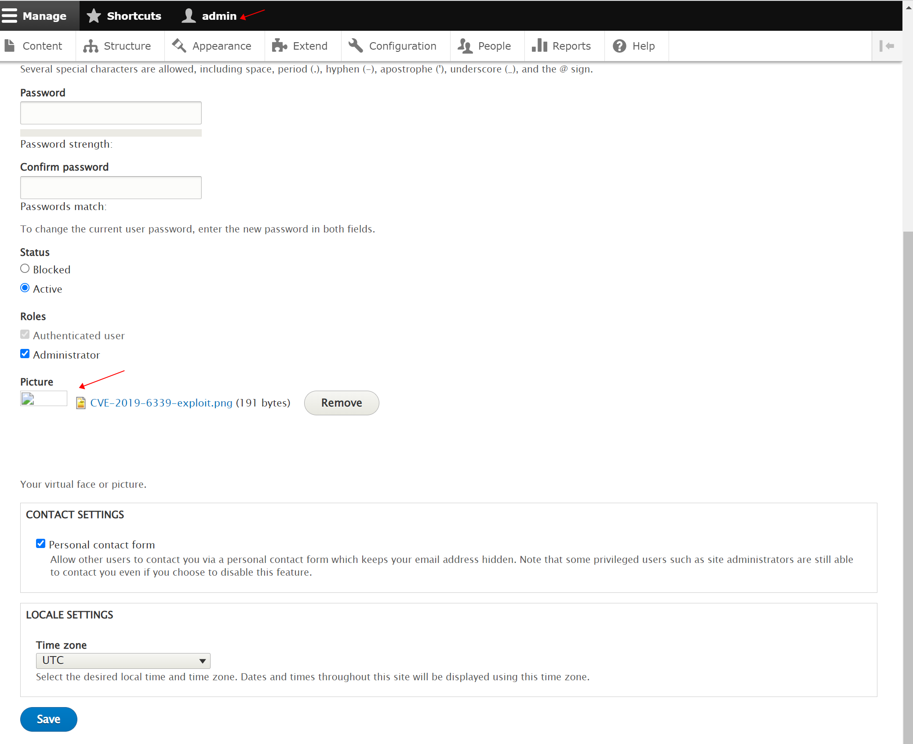
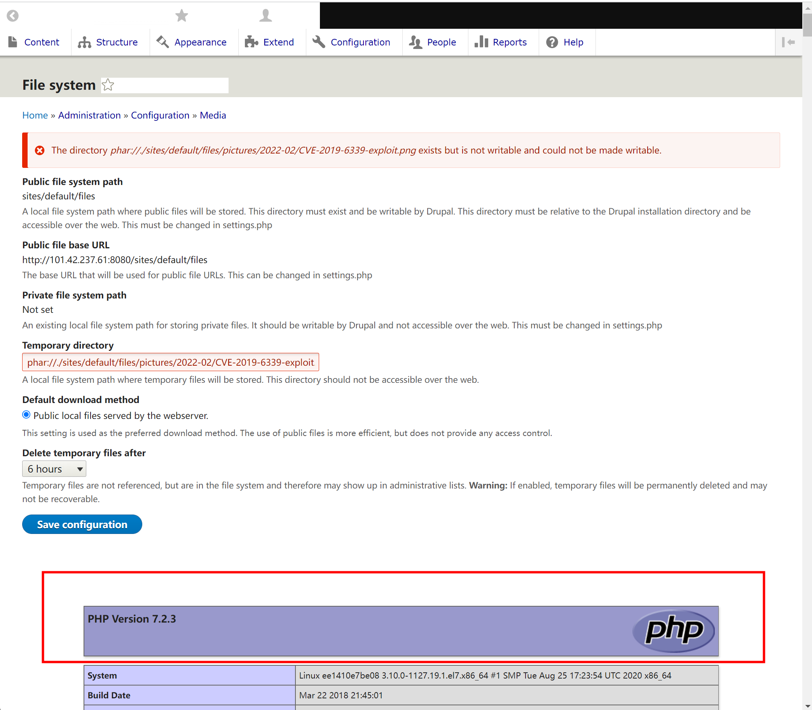

Drupal 远程代码执行漏洞 CVE-2019-6339¶
漏洞描述¶
影响软件：Drupal
方式：phar反序列化RCE
效果：任意命令执行
环境搭建¶
Vulhub执行如下命令启动drupal 8.5.0的环境：
docker-compose up -d
环境启动后，访问 http://your-ip:8080/ 将会看到drupal的安装页面，一路默认配置下一步安装。因为没有mysql环境，所以安装的时候可以选择sqlite数据库。

漏洞复现¶
如下图所示，先使用管理员用户上传头像，头像图片为构造好的 PoC，参考Vulnmachines的PoC，命令为phpinfo()。

Drupal 的图片默认存储位置为 /sites/default/files/pictures/<YYYY-MM>/，默认存储名称为其原来的名称，所以之后在利用漏洞时，可以知道上传后的图片的具体位置。
访问 http://127.0.0.1:8080/admin/config/media/file-system，在 Temporary directory 处输入之前上传的图片路径，示例为 phar://./sites/default/files/pictures/2022-02/CVE-2019-6339-exploit.png，保存后将触发该漏洞。如下图所示，触发成功。
